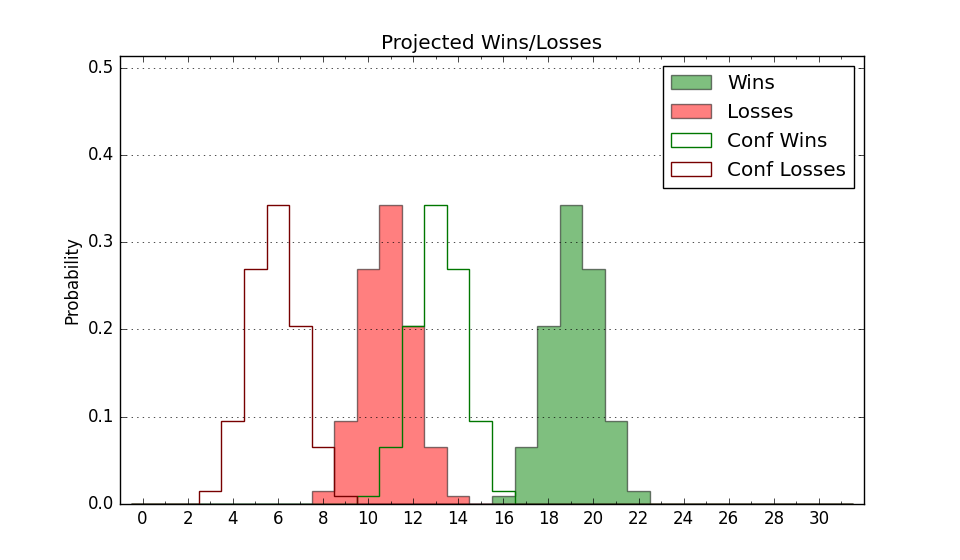

| Home | Game Probabilities | Conferences | Preseason Predictions | Odds Charts | NCAA Tournament |
| City: | Akron, Ohio | |
| Conference: | Mid-American (3rd)
| |
| Record: | 9-3 (Conf) 15-8 (Overall) | |
| Ratings: | Comp.: 5.1 (118th) Net: 5.2 (118th) Off: 104.2 (140th) Def: 99.0 (108th) SoR: 0.6 (121st) |
| Remaining | ||||||
|---|---|---|---|---|---|---|
| Date | Opponent | Win Prob | Pred. | |||
| 2/11 | @ Ohio (155) | 44.5% | L 70-72 | |||
| 2/14 | @ Eastern Michigan (304) | 75.9% | W 78-70 | |||
| 2/18 | Buffalo (184) | 77.1% | W 78-69 | |||
| 2/21 | @ Toledo (115) | 34.4% | L 74-79 | |||
| 2/25 | Western Michigan (305) | 91.5% | W 77-62 | |||
| 2/28 | Ball St. (135) | 69.6% | W 71-65 | |||
| 3/3 | @ Kent St. (69) | 21.3% | L 61-69 | |||
| Previous | Game Score | |||||
| Date | Opponent | Win Prob | Result | Off | Def | Net |
| 11/7 | South Dakota St. (180) | 76.2% | W 81-80 | 1.1 | -14.1 | -13.1 |
| 11/11 | (N) Mississippi St. (42) | 24.4% | L 54-73 | -4.6 | -11.8 | -16.4 |
| 11/15 | Morgan St. (278) | 88.6% | W 65-59 | -13.0 | 1.3 | -11.8 |
| 11/21 | (N) Western Kentucky (170) | 62.0% | W 72-53 | 17.3 | 13.3 | 30.6 |
| 11/22 | (N) LSU (139) | 57.1% | L 58-73 | -12.7 | -17.0 | -29.7 |
| 11/23 | (N) Nevada (35) | 22.4% | L 58-62 | -7.6 | 11.0 | 3.4 |
| 11/30 | @Marshall (84) | 25.3% | L 57-68 | -16.9 | 12.2 | -4.7 |
| 12/11 | Jackson St. (330) | 93.5% | W 85-72 | 15.5 | -13.6 | 1.9 |
| 12/14 | Wright St. (193) | 79.0% | W 66-54 | -14.5 | 20.7 | 6.2 |
| 12/19 | Maine (283) | 89.0% | W 87-55 | 9.6 | 13.4 | 23.0 |
| 12/22 | @Bradley (66) | 20.5% | L 55-74 | -15.1 | -1.4 | -16.5 |
| 1/3 | Northern Illinois (227) | 83.7% | W 76-51 | -1.4 | 14.3 | 12.9 |
| 1/6 | @Ball St. (135) | 40.1% | L 63-70 | -8.4 | -1.3 | -9.7 |
| 1/10 | @Bowling Green (272) | 68.7% | W 74-70 | -1.5 | -2.8 | -4.3 |
| 1/13 | Eastern Michigan (304) | 91.5% | W 104-67 | 17.2 | 4.2 | 21.5 |
| 1/17 | @Central Michigan (300) | 74.6% | W 69-51 | -0.1 | 10.3 | 10.1 |
| 1/21 | @Western Michigan (305) | 76.0% | W 63-55 | -16.7 | 17.3 | 0.6 |
| 1/24 | Miami OH (316) | 92.4% | W 73-68 | 3.0 | -23.2 | -20.2 |
| 1/28 | Ohio (155) | 73.2% | W 83-77 | 20.5 | -20.0 | 0.5 |
| 1/31 | @Buffalo (184) | 49.7% | W 81-64 | 13.7 | 11.4 | 25.1 |
| 2/3 | Kent St. (69) | 48.0% | W 67-55 | 11.8 | 13.6 | 25.4 |
| 2/7 | Toledo (115) | 64.1% | L 74-84 | -7.2 | -25.3 | -32.6 |
| 2/10 | @Ohio (155) | 44.5% | L 81-90 | 12.5 | -17.5 | -5.0 |
| Stats & Trends | |||||
|---|---|---|---|---|---|
| Current | Day | Week | Month | Season | |
| Composite | 5.1 | -0.0 | -1.7 | +2.2 | +2.6 |
| Comp Rank | 118 | +2 | -14 | +24 | +11 |
| Net Efficiency | 5.2 | -0.0 | -1.8 | +2.2 | -- |
| Net Rank | 118 | +2 | -15 | +28 | -- |
| Off Efficiency | 104.2 | -0.0 | +0.1 | +3.3 | -- |
| Off Rank | 140 | -2 | -3 | +47 | -- |
| Def Efficiency | 99.0 | -0.0 | -1.9 | -1.1 | -- |
| Def Rank | 108 | +1 | -18 | +4 | -- |
| SoS Rank | 211 | +7 | +30 | -21 | -- |
| Exp. Wins | 19.1 | +0.0 | -2.0 | +1.0 | +1.6 |
| Exp. Conf Wins | 13.1 | +0.0 | -2.0 | +1.0 | +1.6 |
| Conf Champ Prob | 7.0 | +0.3 | -29.2 | +0.3 | -9.6 |

| Advanced Stats | ||
|---|---|---|
| Stat | Value | Rank |
| Off Eff FG % | 0.496 | 211 |
| Off Ast Ratio | 0.141 | 177 |
| Off ORB% | 0.270 | 184 |
| Off TO Rate | 0.140 | 61 |
| Off FT Ratio | 0.321 | 159 |
| Def Eff FG % | 0.495 | 138 |
| Def Ast Ratio | 0.141 | 162 |
| Def ORB% | 0.241 | 82 |
| Def TO Rate | 0.160 | 144 |
| Def FT Ratio | 0.287 | 117 |